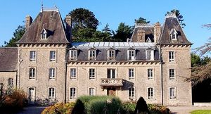
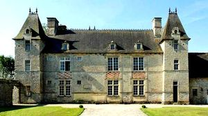
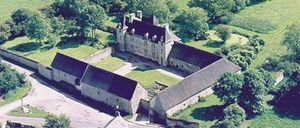
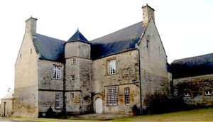

Recensement Jean-Claude Truffet
| Département | 50 — Manche |
| Canton | Carentan |
| Commune | Saint-Côme-du-MonT |
| Type d'édifice | Château |
| Période d'origine | XVIII |
| Coordonnées GPS | 49° 20' 00" Nord, 1° 15' 16" Ouest |




Deux châteaux dans cet article; Bel-Esnault et Hauboug et le manoir de Rampan. BEL-ESNEAULT, le château est situé au coeur d'un parc paysagé romantique de trois hectares datant du XIXe siècle. De 1717 à 1903, le château Bellenau a appartenu à la famille Lafosse. Pierre-Etienne-Joseph Lafosse, né en 1828 à Saint-Côme du Mont, a fait un jour le rêve d'un parc extraordinaire, derrière la demeure familiale, planté d'arbres rares et aménagé de jardins d'eau, d'îles, de folies et de grottes. Sur une période de près de 40 ans, il est parvenu à transformer les marais en un environnement unique. Il a introduit et acclimaté pour la première fois dans le Cotentin, connu pour ses micro-climats, des plantes rares et exotiques. Il a également imaginé et conçu toute une série d'îles et de cours d'eau qui sont connectés entre eux par des ponts ou accessibles en barque. Arbres et arbustes ont été plantés pour former des bosquets que l'on traverse grâce à un réseau de chemins sinueux à explorer. Transformé en chambres d'hôtes par la famille Grandin, éléments protégés MH : le parc du château (fabrique, grotte, belvédère) : inscription par arrêté du 19 mai 2010. HAUBOURG, remonte au premier tiers du XVIIe siècle. Lhistoire de son édification et des familles propriétaires qui sy sont succéder mérite de sy intéresser. Haubourg a été bâti vers 1630 par Léonard Rouxelin, avocat en la vicomté de Carentan. Son père, Richard, termina sa carrière en tant que Lieutenant-général en la vicomté de cette même ville, étant le premier notable de sa famille établi à Saint-Côme. Cest à partir de Richard, que sétablit la filiation des Rouxelin sur cette commune. Son fils, Léonard, afin dasseoir sa renommée, se titra en 1602 Sieur de Haubourg.
BEL-ESNEAULT, apelé aussi le Château du Bel-Esneau est un château bâti à Carentan-les-Marais, La famille Joseph-Lafosse acquiert la terre en 1752. Un membre de cette famille, Pierre-V-Étienne Joseph-Lafosse (1828-1897) entreprend l'aménagement d'un parc après qu'il entre en possession de son héritage en 1848. Les travaux d'aménagement du parc durent 40 ans. Le parc fut amputé de moitié après la mort de son créateur, en 1897, avec une transformation de cette partie, cédée en pâturages. Une association « Les Amis du Jardin de Bellenau » se charge de valoriser l'espace. Le parc fut créé par Pierre-Étienne-Joseph Lafosse (1828-1897). Le château de Belleneau est inscrit aux M.H. Le parc est ouvert au Public en attendant la réhabilitation du château de Belleneau. Les annexes ont été transformées en gîte d'hôtes. Le parc a une superficie de 2 ha. Le parc est ouvert au Public et les annexes ont été transformées en gîte d'hôtes. Dans l'espace aménagé, le propriétaire acclimate des espèces végétales « rares et exotiques ». HAUBOURG Incontestablement, par ses spécificités architecturales,.Le manoir de Haubourg se présente sous la forme d'un logis rectangulaire flanqué de deux pavillons qui s'éclairent par des fenêtres étroites. La charretterie comporte trois arches en plein cintre reposant sur des colonnes. On accède au domaine par une porte charretière. RAMPAN, ce manoir a été reconstruit au lendemain de la guerre de Cent Ans, au début du XVIe siècle. L'ensemble des communs date des XVIe et XVIIe siècles.
Bel-Esnauly; famille Lafosse Haubourg; Léonard Rouxelin
"
Deux châteaux dans cet article; Bel-Esnault grav-1 et Hauboug grav-2-3 et le manoir de Rampan grav -4.GPS : 49° 20' 00" Nord, 1° 15' 16" Ouest